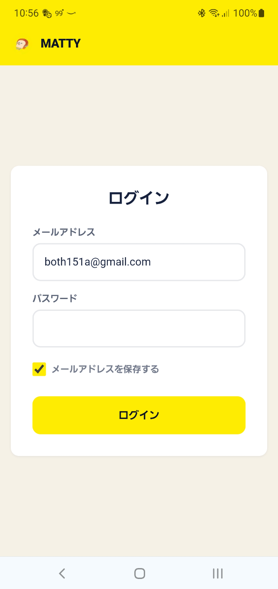
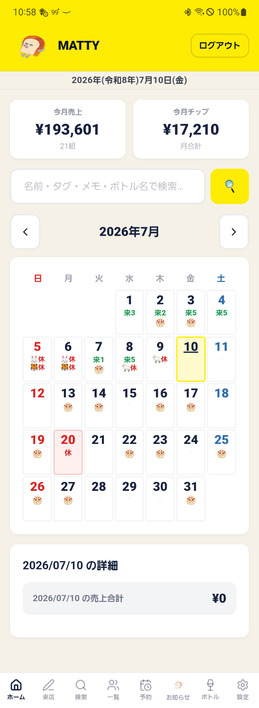
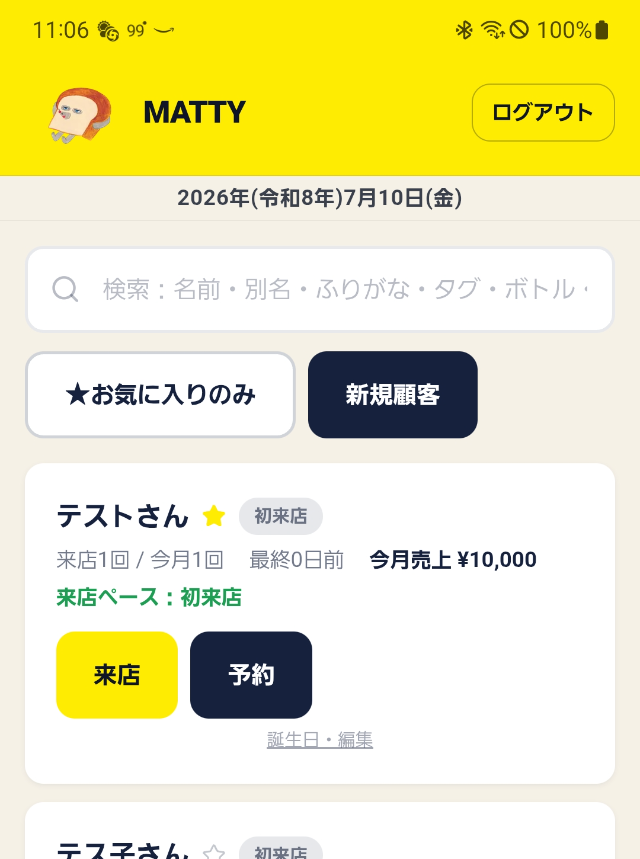

まずは全体をさらっと見るだけでOKです。覚えなくて大丈夫。

メールアドレスとパスワードでログインします（メールアドレスを保存すると次回から入力済になります）。
パスワードは面倒ですが毎回入力してください。
店タブレットは営業終了し帰るときにはログアウトしましょう。各自スマホ/タブレットも使わないときはログアウトしましょう。

今月の売上・チップ、検索窓、カレンダーがまとまっています。困ったらまずここに戻ればOKです。
タブレットを横向きで使うと、左側または下側に次のメニューが並びます。
| 🏠 ホーム | 売上・カレンダーを見る画面 |
| 📝 来店 | 来店を登録する画面 |
| 🔍 検索 | お客様を探す画面 |
| 👥 一覧 | お客様の一覧・新規登録 |
| 📅 予約 | 予約の一覧・登録 |
| 🍞 お知らせ | 誕生日・イベント・休みの確認 |
| 🍷 ボトル | ボトルの検索・状態変更 |
| ⚙️ 設定 | タグ・イベント・スタッフ管理など |

「一覧」を押すと、登録されているお客様がカードで並びます。